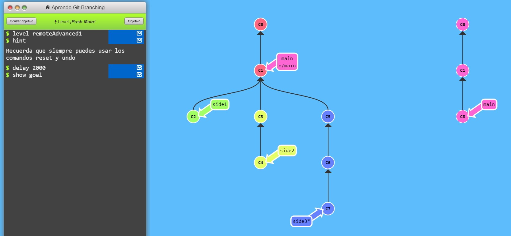
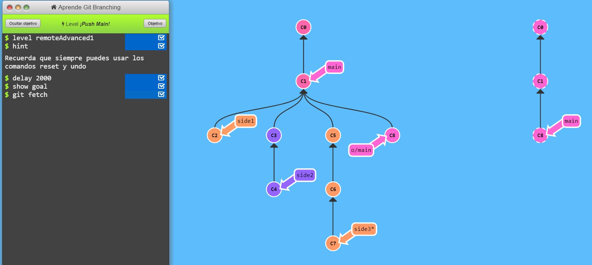
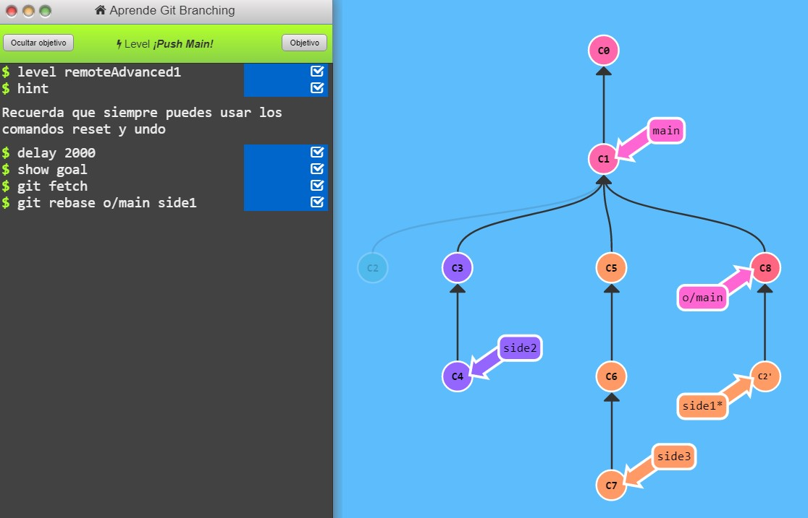
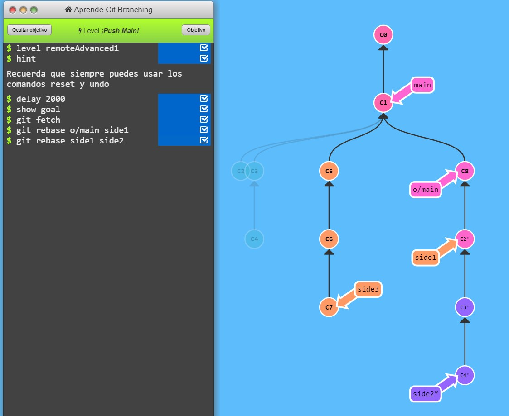
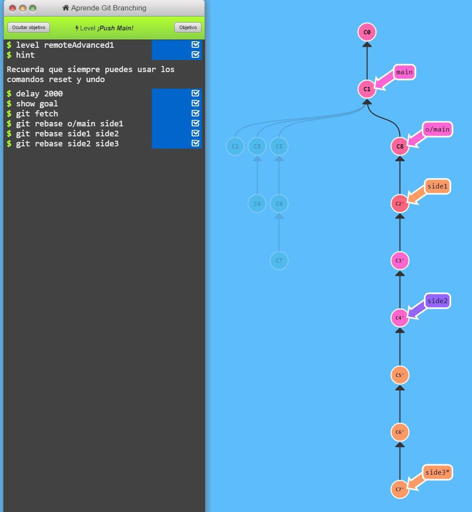
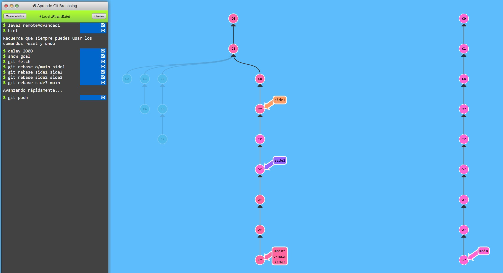

2do Ejercicio:
Este nivel es bastante pesado. Aquí tienes algunas ideas para resolverlo:
Tenemos tres ramas específicas -- side1 side2 and side3
Queremos hacer push de cada una de esas ramas, en orden, al remoto
El remoto fue actualizado, así que vamos a tener que integrar esos cambios también
:O ¡Genial! ¡Éxito! Completar este nivel representa un gran avance.
Puedes especificar el hash si quieres, pero mejor ¡trata de usar la referencia relativa!
Situación inicial:

Para el segundo ejercicio, primero he utilizado el comando git fetch, este descarga commits, archivos y referencias
de un repositorio remoto a tu repositorio local. Esta acción la llevas a cabo cuando quieres ver en qué han estado trabajando los demás.

Después he utilizado el comando rebase que se utiliza para fusionar mediante un cambio de base, básicamente le decimos a side1 que se fusione en o/main:

A continuación utilizo el mismo comando pero con diferente objetivo, ya que lo que quiero es que side2 se fusione con side1:

De nuevo utilizo el mismo comando pero con diferente objetivo, ya que lo que pretendo ahora es que side3 se fusione con side2:

Lo utilizo de nuevo para fusionar main con side3:

Una vez que ya he conseguido que mi Local esté en el orden especificado en el enunciado procedo a pushear a remoto:

Como explicación adicional:
El comando "push" se utiliza subir los cambios de nuestro repositorio local al remoto.
Si lo que queremos es traer del repo remoto a nuestro local, podemos usar git pull.